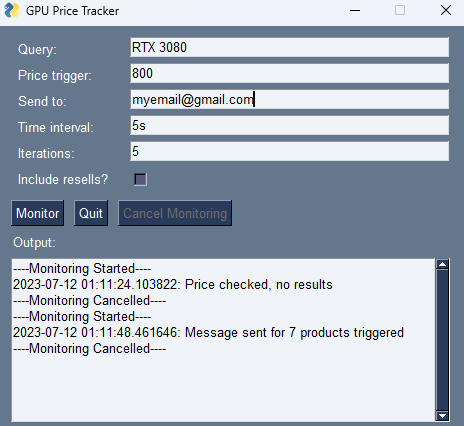

This project was created when I was beginning to research creating a new PC. In order to ensure I would be notified when GPUs I was interested in were available at a discount, I created a software that automatically scrapes the web for the latest GPU prices and emails the user if the price is below their desired threshold.
The project is available on GitHub and was created using Python. Specifically, the PySimpleGUI and BeautifulSoup libraries were used. Once the software is running, the user is able to control many aspects of the monitoring. The product(s) being monitored can be adjusted by inputting a search query and seperating multiple with commas. The price threshold, target email, and the frequency of checks can also be adjusted. The user can also select whether or not to include second-hand listings in their search. Finally, the software can be set to run for a set number of iterations (price checks) or can be run indefinitely until stopped by the user.